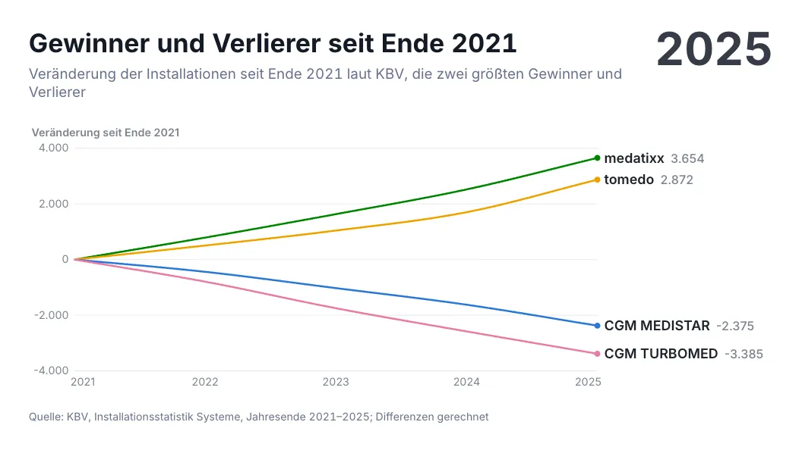
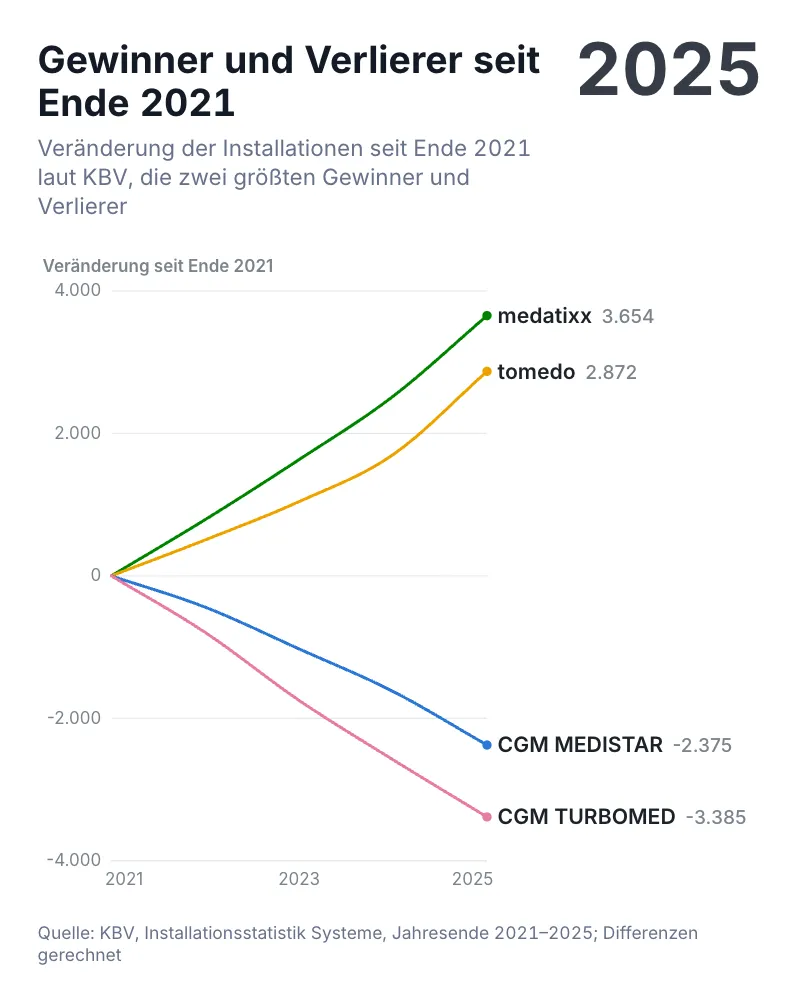

Praxissoftware wechseln: Gewinner und Verlierer seit 2021
Zwischen Ende 2021 und Ende 2025 hat das neue System medatixx 3.654 Installationen gewonnen und tomedo 2.872, während CGM TURBOMED 3.385 und CGM MEDISTAR 2.375 verloren haben. Das zeigt die Installationsstatistik der Kassenärztlichen Bundesvereinigung (KBV). Die Gesamtzahl aller Installationen sank in derselben Zeit nur um 2.451 auf 116.954 – unter der stabilen Summe wird kräftig umgeschichtet.


Das Wichtigste in Kürze
- Unter den 40 Systemen, die irgendwann mindestens 500 Installationen hatten, gewannen 14 zusammen 13.667 Installationen, 25 verloren zusammen 15.139.
- Größte Gewinner: medatixx (+3.654), tomedo (+2.872), T2med (+2.595), Epikur (+1.527).
- Größte Verlierer: CGM TURBOMED (−3.385), CGM MEDISTAR (−2.375), x.isynet (−1.541), x.concept (−1.360), CGM ALBIS (−1.146).
- Die fünf CGM-Arztsysteme verloren zusammen 8.093 Installationen. Die drei älteren medatixx-Systeme verloren 3.994, fast so viel, wie das neue medatixx gewann.
Zwei Arten von Wechsel
Hinter den Zahlen stecken zwei verschiedene Bewegungen. Die erste ist ein Umzug innerhalb eines Herstellers: medatixx bietet seinen Praxen den Umstieg von x.isynet, x.concept und x.comfort auf das neue Hauptprodukt an. Dass das neue medatixx 3.654 gewinnt und die alten drei 3.994 verlieren, ist überwiegend dieser Umzug, kein Gewinn gegen die Konkurrenz.
Die zweite ist der Wechsel zwischen Herstellern. Die CGM-Systeme verlieren deutlich mehr, als ein Umzug innerhalb der Gruppe erklären könnte, denn kein CGM-System wächst. tomedo, T2med und Medical Office gewinnen gleichzeitig zusammen 6.276 Installationen. Ob genau diese Praxen von CGM kommen, sagt die Statistik nicht.
§ 371 SGB V verpflichtet die Hersteller, eine Archivierungs- und Wechselschnittstelle anzubieten, über die Praxen ihre Daten mitnehmen können. Ein öffentliches Verzeichnis, welches System sie zertifiziert hat, führt die KBV seit Ende 2025 nicht mehr.
Die Bewegung hält an: das letzte Quartal 2025
Die KBV veröffentlicht auch Quartalswerte. Zwischen Ende September und Ende Dezember 2025 setzte sich das Muster fort: Das neue medatixx gewann 313 Installationen, tomedo 311, T2med 198 und Medical Office 138. CGM MEDISTAR verlor 194, CGM TURBOMED 166, x.concept 120, x.isynet 111 und CGM ALBIS 98. Die Summe aller Installationen stieg im selben Quartal leicht, um 111.
In der Arztgruppe Allgemeinmediziner war es dasselbe Bild im Kleinen: plus 94 für medatixx, plus 89 für T2med und plus 69 für tomedo, minus 77 für TURBOMED. Welche Systeme in welcher Fachgruppe vorn liegen, zeigt Praxissoftware der Allgemeinmediziner.
Was die Zahl nicht sagt
- Salden, keine Wechselströme. Die KBV zählt, wie viele Installationen ein System zu einem Stichtag hat. Wer von welchem System zu welchem wechselt, steht nirgends. Ein Rückgang kann auch durch Praxisaufgaben entstehen, ein Zuwachs durch Neugründungen.
- Installationen sind keine Praxen. Ein MVZ zählt wie eine Einzelpraxis.
- Kleinstsysteme fehlen in der Rechnung. Systeme, die nie 500 Installationen hatten, sind nicht einzeln erfasst; über alle Systeme sank die Summe stärker (−2.451) als bei den 40 erfassten (−1.472).
Gerechnet
Alle Zahlen sind Differenzen belegter Werte der KBV: Jahresenden 2021 und 2025, für das letzte Quartal die Stände vom 30.09. und 31.12.2025, für die Allgemeinmediziner der Bericht „TOP 20 Systeme je Fachgruppe“. Sonst ist nichts gerechnet. Die Grafik zeigt die Veränderung gegenüber Ende 2021 für die zwei größten Gewinner und Verlierer.
Quelle und Methode
Kassenärztliche Bundesvereinigung, Installationsstatistiken der Praxisverwaltungssysteme, Datenstände 31.12.2021 und 31.12.2025, abgerufen am 20. und 22. Oktober 2026. Erfasst sind alle Systeme mit mindestens einmal 500 Installationen. Den Verlauf seit 2013 zeigt Welche Praxissoftware Arztpraxen nutzen, die Hersteller CGM, medatixx und die Neuen, die Neuen im Einzelnen die Aufsteiger.
Häufige Fragen
Welche Praxissoftware verliert Kunden?
Nach Installationen in der KBV-Statistik verloren zwischen Ende 2021 und Ende 2025 am meisten CGM TURBOMED (−3.385), CGM MEDISTAR (−2.375), x.isynet (−1.541), x.concept (−1.360) und CGM ALBIS (−1.146).
Wohin wechseln Arztpraxen?
Das sagt die KBV-Statistik nicht direkt. Am stärksten gewannen das neue medatixx (vor allem durch Umstieg von älteren medatixx-Systemen), tomedo, T2med und Medical Office.
Muss eine Praxis ihre Daten beim Wechsel mitnehmen können?
Ja. § 371 SGB V verpflichtet die Hersteller zu einer Archivierungs- und Wechselschnittstelle.